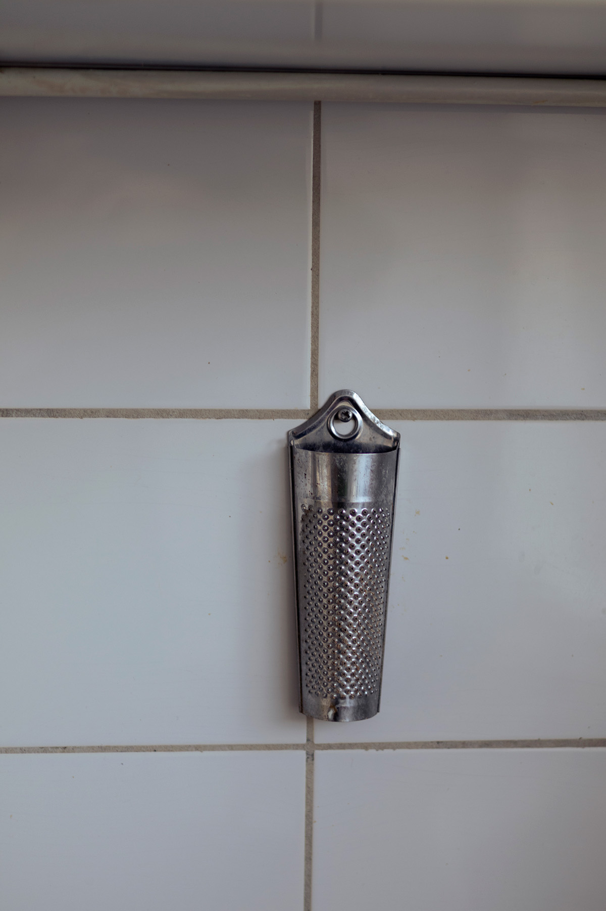
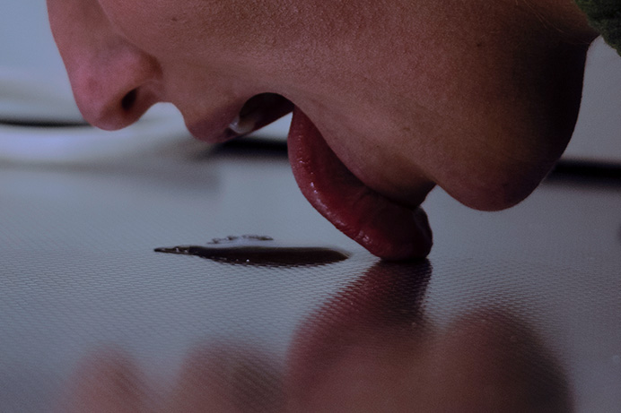
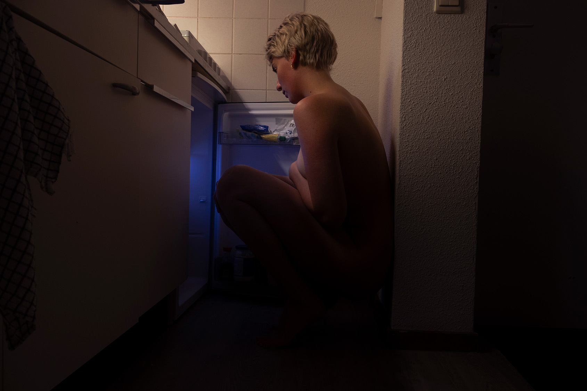

This cookbook brings together personal recipes and real stories from adults living with ARFID (Avoidant/Restrictive Food Intake Disorder). It highlights how eating often effortless for many can feel overwhelming and frightening for others. The project aims to break the silence, raise awareness, and gently guide a return to comfort with food, step by step.
At the same time, it offers a visual and emotional exploration of vulnerability and the human body. By presenting food outside traditional settings, it challenges norms and invites openness, understanding, and a redefinition of what comfort can look like.


